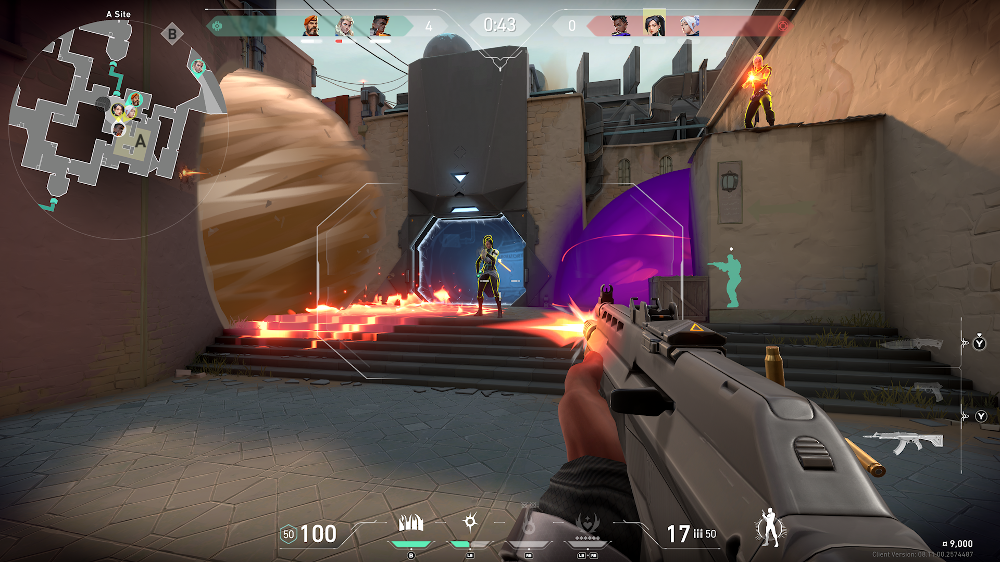

Valorant
Valorant je besplatna taktička pucačina iz prvog lica (FPS) koju je razvio Riot Games i zvanično izdao 2020. godine. Igra kombinuje elemente klasičnih taktičkih pucačina poput Counter-Strike: Global Offensive sa herojskim sposobnostima sličnim onima u igrama poput Overwatch. Igrači se dele u dva tima od po pet članova i bore se u rundama – jedan tim pokušava da postavi “spike” (bomba), dok drugi pokušava da ih zaustavi. Svaki igrač bira “agenta” sa jedinstvenim sposobnostima koje dopunjuju standardno oružje, što dodaje sloj strategije i timske dinamike. Valorant je brzo stekao ogroman uspeh u esports zajednici zahvaljujući svom kompetitivnom balansu, preciznoj mehanici pucanja i aktivnoj podršci od strane developera.